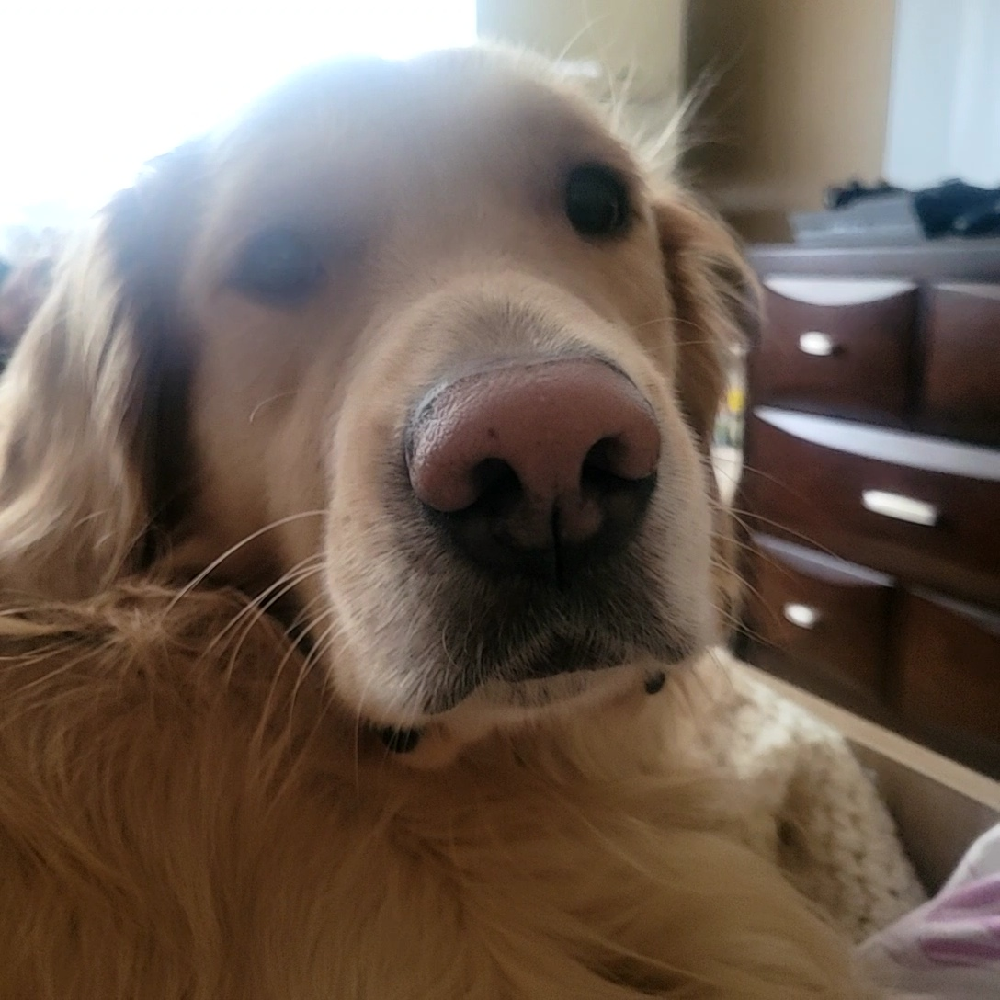

Voici mon chien Poppy

Mon chien est un beau golden retriever de 4 ans. Ma famille l'a adopter l'année dernière à cause que son ancien maitre étais trop malade.
Poppy est un chien très special. Il est allergique a presque tout ce qui existe, donc son alimentation est controlé.
Par contre, il lui arrive de manger certains aliments,car cette adorable creature que j'adore est un geant de 100 lbs (avec une grande force),
qui avale tout ce qui tombe à terre que ce soit mangable ou pas...
Poppy est très peureux. Il a peur de son ombre et de tout ce qui fait du bruit ! Et puisqu'il n'a pas conciense de sa taille, il fait souvent
tomber des trucs ce qui le fait sursauté. Il est mignion, mais à cause de son passer, il a beaucoup d'anxiété. Nous pensons que son ancien
proprietaire le maltraitait. À cause de cela, il a appris que paraitre agressif est une bonne methode pour que le monde n'approche pas.
Il ne fait que semblant et ne va jamais mordre, mais cela fait quand même peur aux personnes... C'est pour cela que Poppy ne peut présentement pas
prendre de marche, mais nous avons une grande cours où il va souvent pour manger l'herbe et pour japper après les ecureuils.
Poppy adore jouer, mais puisque c'est un grand chien, les jouets ne dure pas longtemps... des fois il les detruits en moins d'une heure !
Ce grand imbesile ammene avec lui une tonne de difficulté mais même après tout il reste un membre de notre famille. :)
Mes coordonnées
Ville de
Laval
QC,Canada
Mes liens
Endroits à visiter à Tokyo
Mon collège
Me contacter